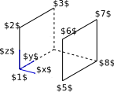

Uniaxial Extension Solid
In this tutorial an elastic solid submitted to uniaxial loading is considered. The geometry is given by $L_x$, $L_y$ and $L_z$, and a tension $p$ is applied on the face at $x=L_x$, see the diagram below.
We begin by defining the structural properties of the mesh.
The material properties of the model are defined by the MELCS parameters. In this case a SVK material is considered.

This model can be solved analytically and the result shows a good match between the analytic result and the numerical solution obtained with ONSAS.